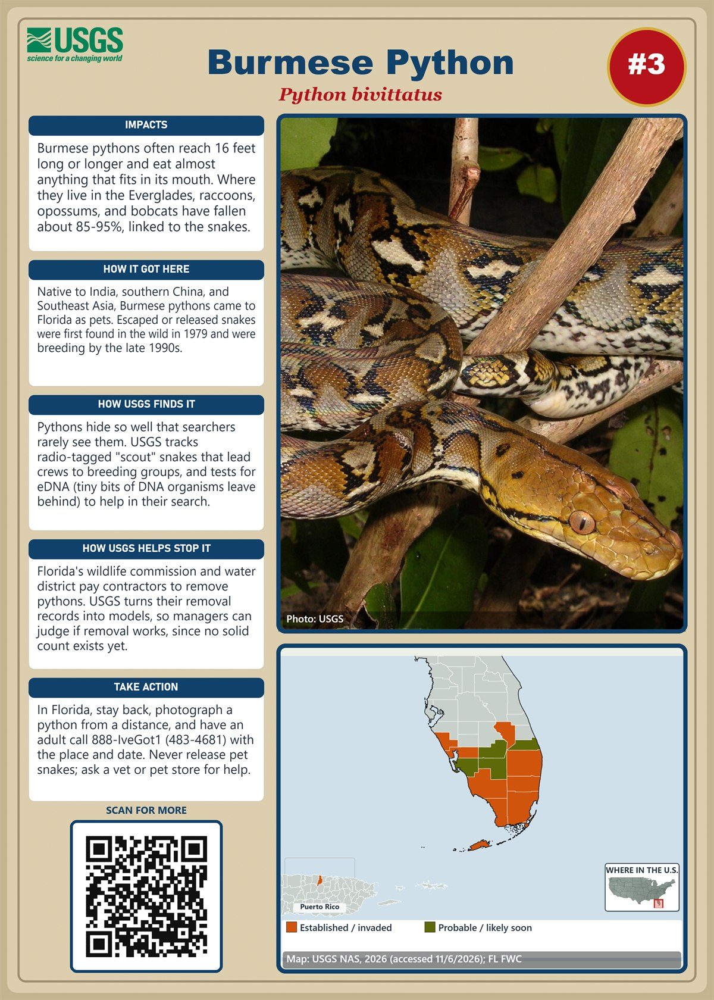
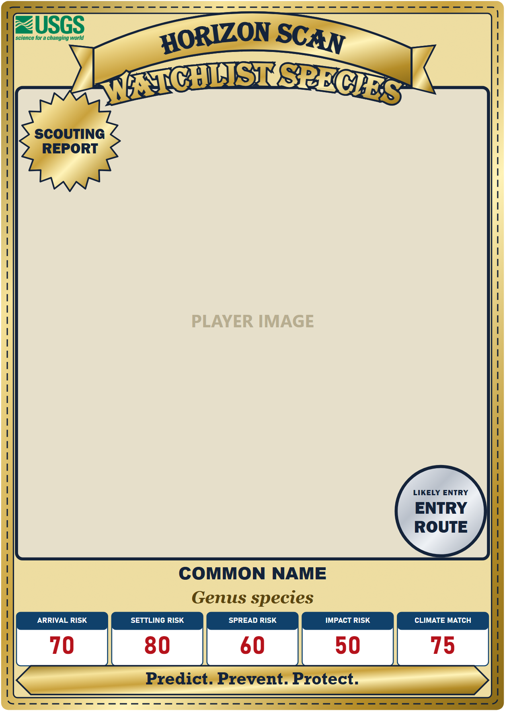

USGS develops the science that the Department of the Interior and its partners use to stop invasive species. These cards highlight USGS's role and much of the specific work. Kids and adults learn the dangers of invasives and get excited that USGS is on the job.
Tap or click a card to flip it and read the science. Use enlarge to zoom in for a closer look.
They are a way to compare invaders at a glance, the way a baseball card compares players, rated 0 to 100: Spread, Impact, Resilience, Stealth, and a just-for-fun Gross-Factor. They are our best judgment, started from what USGS and partners have documented for each species. They are not objective scientific metrics or official USGS measurements. The facts on the back of each card are the sourced science. The Horizon Scanning cards are different: their ratings come from expert scoring.
The AI-generated art on the front draws you in. Every back shows the real USGS work behind it.

Real example, Burmese Python: Florida pays contractors to remove pythons, but no one has a solid count of how many remain. USGS turns the removal records into models, so managers can judge whether removal is working and how to improve it.
Partners such as the U.S. Fish and Wildlife Service, USDA, states, Tribes, universities and local managers usually run the control work. Each card credits them by name.
Besides the species already here, two more kinds of cards show the full range of invasive species work that USGS is engaged in. Horizon Scanning cards watch for high-risk invaders that could arrive and show how they might spread. Special Topics cards share the tools and stories behind the science.

Not here yet, but on our radar.
These cards show a species that has not arrived in the U.S. but that experts rate as a high risk, so we can act before it gets here. The front rates how likely it is to arrive, settle, and do harm. The back shows where it could settle and how USGS watches for it.
These cards are not about one species. They show a tool, explain a rule, or tell a story from invasive species work.
Some of the best invasive species science is not an animal or a plant. This example is READI-Net, the USGS team and water-sampling robot that look for eDNA (tiny bits of DNA that organisms leave behind) so managers know where to look closer to determine if the species is present.
Some Special Topics ideas under consideration. This is not a final list. Only READI-Net is built as an example.
It fits every public-facing channel we already staff.
21 species cards are built, with a Horizon Scanning example and a Special Topics example. See how the cards could be packed and what they might cost.
Packs & costs →